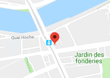

<footer>
  <div class="footer-index">
  <h3>Index of site</h3>
    <ul>
      <li id="address" class="mt-0">Address : We live here</li>
      <li id="tel" class="mt-0">Tel : 0125487966</li> 
    </ul>
  </div>
  <div class="footer-location">
    <h3>Find Us</h3>
    
    <ul>
      <li id="street">32 Boulevard Vincent Gâche</li>
      <li id="city">44200 Nantes</li>
    </ul>
  </div>
  <div class="footer-contact">
    <h3>Contact Us</h3>
    <ul>
      <li id="tel">Tel : 01 25 48 79 66</li> 
      <li id="mail">Mail : lorem.ipsum@gmail.com</li> 
    </ul>
  </div>
  <div class="footer-socials">
    <h3>Follow Us</h3>
      <ul>
      <li><a href="www.facebook.com"> </a></li>
      <li><a href="www.instagram.com"> </a></li>
      <li><a href="www.twitter.com"> </a></li>
      </ul>
  </div>
</footer>
<p id="copyright">Created by Agromy and Clo - All rights reserved</p>
<!-- création d'une variable footer pour selectionner les élément à créer dans le footer du HTML.
Penser à changer les liens et récupérer les images -->